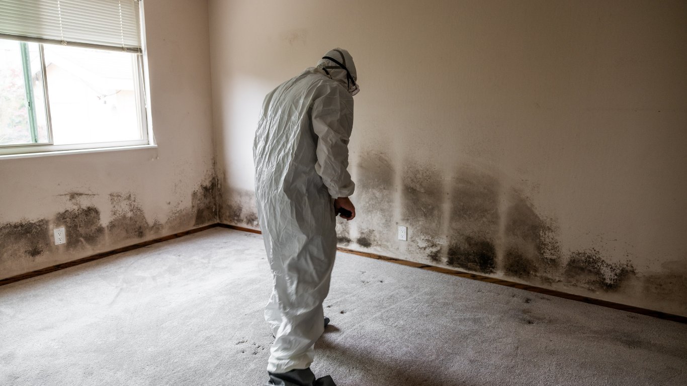

We provide professional mold remediation services across Texas that help homeowners address contamination quickly while preventing long-term structural and indoor air quality problems.
One of the first concerns homeowners have after discovering mold is how much remediation will cost. The answer depends on several factors, including the size of the affected area, the severity of contamination, and whether hidden moisture damage is involved. Understanding what impacts mold remediation cost helps property owners prepare for the process and make informed decisions when protecting their home.
Mold remediation pricing varies because every property and contamination issue is different. A small surface-level issue in a bathroom may require minimal cleanup, while widespread contamination behind walls or under flooring often involves extensive removal and drying procedures.
One of the biggest pricing factors is the size of the affected area. Larger contamination zones require more labor, containment materials, air filtration equipment, and drying time. The type of material affected also matters. Mold inside drywall, insulation, carpeting, or subflooring usually increases costs because porous materials often need removal and replacement.
Moisture source identification is another major part of the process. If leaks, storm damage, or plumbing failures are still active, repairs must happen before remediation can be completed successfully. Professional inspections through experienced mold remediation services help determine the true scope of damage before cleanup begins.
Smaller mold issues are typically less expensive because they involve fewer materials and limited containment procedures. Surface-level growth on tile, non-porous surfaces, or isolated areas may require only targeted cleaning and drying.
Larger contamination problems become more complex. Mold hidden behind walls, inside HVAC systems, or beneath flooring usually requires:
Once contamination spreads into structural materials, restoration timelines and labor requirements increase significantly. Fast response after leaks or flooding often helps reduce both the extent of damage and overall remediation costs.
Many mold issues begin with unresolved water damage. Burst pipes, roof leaks, flooding, and poor ventilation all create moisture conditions that allow mold to spread rapidly. If water remains trapped behind walls or under flooring, remediation becomes more involved.
Professional drying equipment is often necessary to remove hidden moisture completely before reconstruction begins. Without proper drying, mold can return even after visible cleanup appears complete. This is why many projects include both mold cleanup and water damage restoration services as part of the overall process.
The longer moisture remains untreated, the more likely structural materials will require replacement. Early mitigation usually keeps projects smaller and more manageable.
Professional mold remediation involves several stages designed to remove contamination safely while preventing spores from spreading throughout the property. The process often begins with inspection, moisture detection, and contamination assessment.
Containment systems are then installed to isolate affected areas. Air scrubbers and HEPA filtration equipment help maintain cleaner indoor air during removal. Damaged materials may be removed if mold has penetrated deeply into porous surfaces.
After removal, technicians clean and sanitize remaining surfaces before beginning structural drying. Reconstruction may follow if drywall, flooring, or insulation was removed during remediation. Comprehensive restoration services simplify this process by managing both cleanup and repairs under one team.
Insurance coverage for mold remediation depends heavily on the source of moisture. Some policies may cover mold resulting from sudden incidents like burst pipes, while long-term neglect or maintenance-related issues may not qualify.
Homeowners often feel overwhelmed navigating insurance questions after discovering mold. Professional documentation, moisture readings, and detailed inspection reports help support claims when coverage applies. Fast response also demonstrates that homeowners acted to limit additional damage.
According to the Texas Department of Insurance, understanding policy details and documenting damage early are important steps during the remediation process.
Most homeowners want to know whether mold remediation will fully solve the problem. The key to long-term success is correcting the moisture issue causing mold growth in the first place. Without proper moisture control, contamination can return even after cleanup.
Indoor air quality is another major concern. Mold spores may affect respiratory comfort, especially for children, older adults, or individuals with sensitivities. Professional containment and filtration help reduce airborne contamination during remediation.
Homeowners are also concerned about how long the process will take. Smaller projects may only require a few days, while larger jobs involving reconstruction can take longer depending on drying time and material replacement needs.
Fast action is one of the most effective ways to keep remediation costs lower. Addressing leaks immediately and scheduling inspections at the first sign of mold helps limit spread before contamination reaches structural materials.
Routine maintenance also helps reduce future risks. Checking plumbing systems, improving ventilation, and monitoring humidity levels prevent moisture from accumulating in hidden areas. Bathrooms, attics, crawl spaces, and laundry rooms should be inspected regularly for signs of dampness or recurring condensation.
Professional inspections often identify hidden moisture before larger restoration issues develop.
Mold problems rarely stay isolated for long when moisture remains untreated. Proper remediation involves more than removing visible growth — it requires moisture control, safe containment, structural drying, and detailed restoration planning.
If you’re looking for trusted help understanding mold remediation cost in Texas, SWAT Restoration provides professional mold cleanup, water damage restoration, and reconstruction services throughout North Texas. Our team responds quickly, identifies hidden moisture, and guides homeowners through every stage of remediation with clear communication and dependable support. When mold threatens your property, experienced restoration professionals help protect both your home and your indoor air quality.